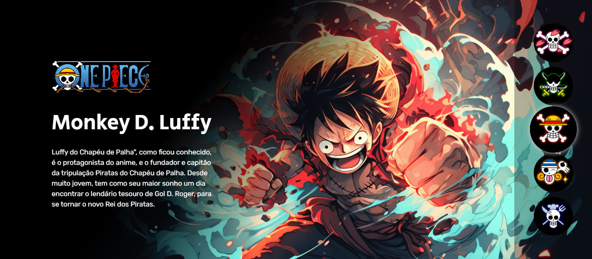
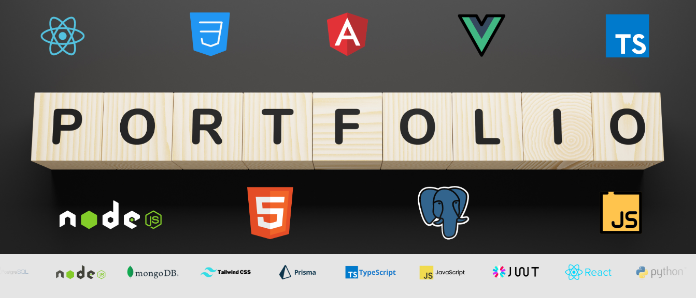
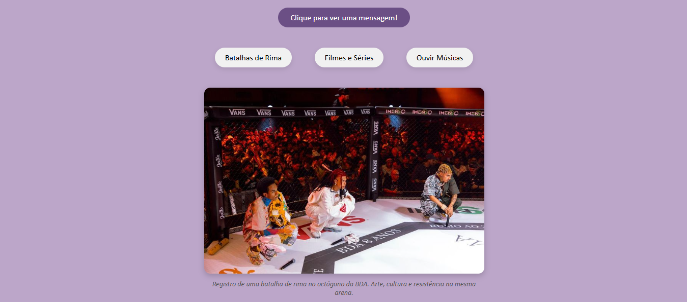

Projeto One Piece
Página interativa inspirada em One Piece com seleção de personagens que exibem imagem e descrição.
Ver ProjetoEstudante de Análise e Desenvolvimento de Sistemas
Em constante evolução na tecnologia 🚀Me chamo Wanda Martins, tenho 27 anos e sou de São Paulo. Atualmente sou estudante de Análise e Desenvolvimento de Sistemas, área pela qual venho desenvolvendo grande interesse, principalmente pela possibilidade de criar soluções e aprender constantemente novas tecnologias. Sempre fui uma pessoa curiosa e apaixonada por conhecimento. Antes de ingressar na área de tecnologia, cursei sete semestres de Psicologia, experiência que contribuiu muito para o desenvolvimento do meu olhar analítico, empatia e compreensão sobre comportamento humano — habilidades que também considero valiosas no desenvolvimento de software. Além da tecnologia, tenho grande interesse por arte e cultura. Gosto de poesia, batalhas de rima, leitura e teatro musical. Também tenho como hobby desenhar e pintar, atividades que estimulam minha criatividade e atenção aos detalhes. Sou fã do universo de Harry Potter e acredito que histórias e imaginação têm um papel importante na forma como enxergamos e criamos o mundo ao nosso redor. Estou sempre em busca de aprender coisas novas e de me desenvolver tanto pessoal quanto profissionalmente.
Análise e Desenvolvimento de Sistemas — UNINTER (em andamento)
Psicologia — UNIP (7 semestres cursados)
HTML e CSS — Alura
Lógica de Programação com JavaScript — Alura
Arquitetura de Computadores — Alura
Inglês Básico
Informática

Página interativa inspirada em One Piece com seleção de personagens que exibem imagem e descrição.
Ver Projeto
Carrossel interativo de linguagens de programação com destaque visual ao passar o mouse.
Ver Projeto
Site de portfólio com apresentação pessoal, links externos e elementos interativos em HTML, CSS e JavaScript.
Ver Projeto